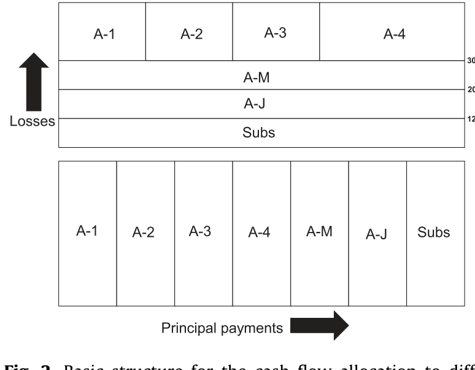
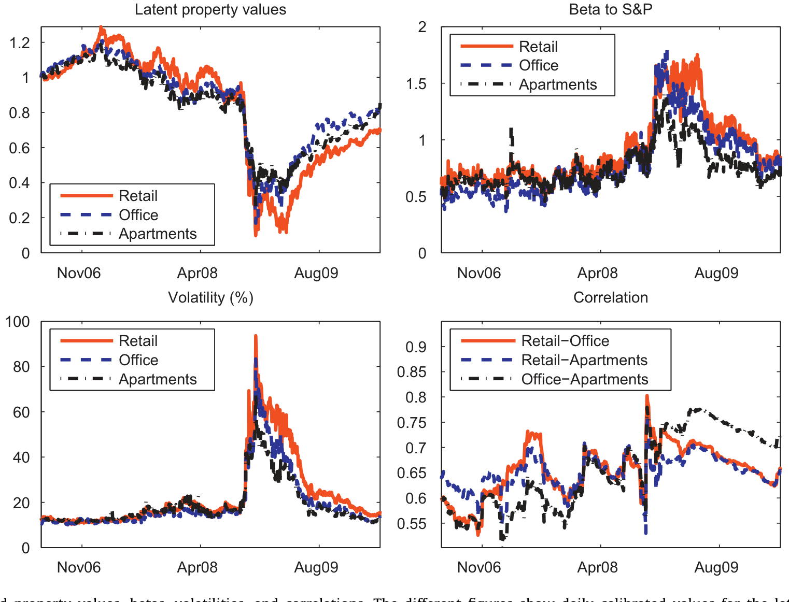
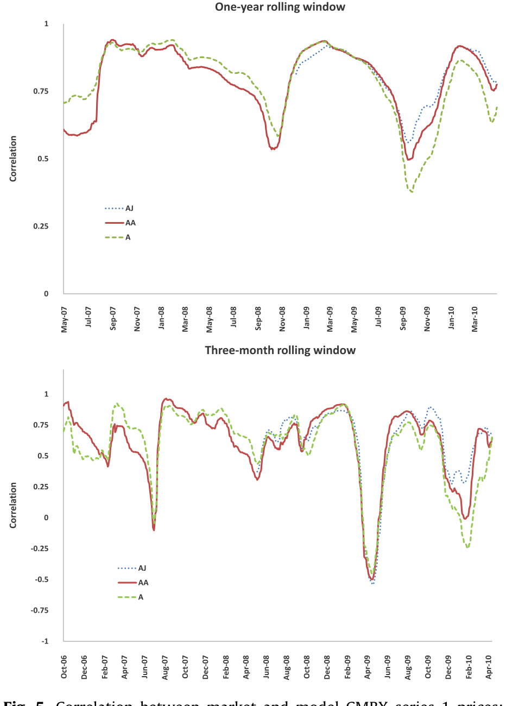
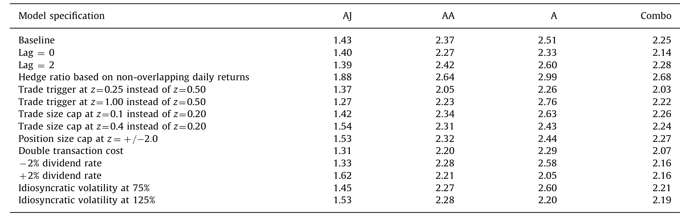
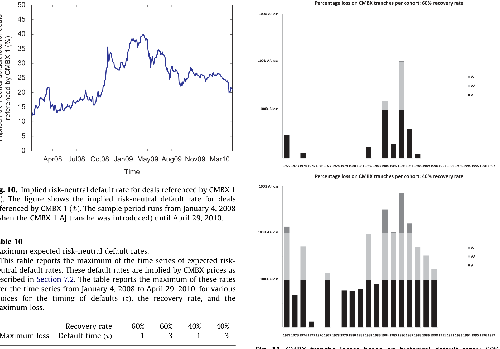
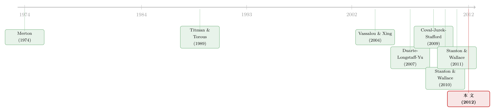

差点和次贷一起被埋葬的那个市场：商业地产衍生品的危机定价
本文读的是 Driessen & Van Hemert (2012, Journal of Financial Economics)：在 2007–2009 危机里，商业地产的信用衍生品 CMBX 并没有像次贷的 ABX 那样跌到「火线甩卖」的地步。作者用一个只校准到 REIT 股票与期权的结构化期权模型给 CMBX 做样本外定价，发现它相对 REIT 没有系统性错价（模型价与市价相关性 86%–96%），既谈不上危机前高估、也谈不上危机中贱卖；唯一站得住脚的异常，是短期的、由银行对冲压力推动的过度反应——可预测、可交易，年化夏普高达 2.25。
1 引言：一个差点被一并埋葬的市场
2009 年 4 月 15 日，CMBX 1 的 AA 指数报出了它历史上的最低价：$19.60。
这意味着什么？CMBX 的报价规则是「$100 减去保护费」。$19.60 的价格，等于说为这一篮子商业按揭债券的 AA 档买一份「违约保单」，要花掉 $80.40——市场几乎在用赌咒发誓的口吻告诉你：这些原本评级很高的债券，要赔个底朝天了。
这是一个似曾相识的故事。在它的「亲兄弟」——次贷住房按揭那边，剧本已经演完了：残值预期归零、评级集体跳水、市场冻结、价格跌到任何一个理性的违约率都解释不了的水平。Stanton and Wallace (2011) 后来给那个市场盖棺定论：ABX 的实际价格太低了，低到与任何合理的按揭违约率都不相容。而在此之前，Coval, Jurek, and Stafford (2009a) 已经先把一巴掌拍在了「分层证券」的脸上——他们论证说，投资者高估了这些产品的优先档，因为他们偷懒，只看评级、不看系统性风险。
于是一个几乎是条件反射式的判断浮了上来：商业地产这边，大概也是一样的吧？无非是把「住宅」换成「写字楼、商场、公寓」，把 ABX 换成 CMBX，故事照旧——危机前被评级忽悠着买贵了，危机中被恐慌甩卖砸穿了。
这篇论文要做的，恰恰是不轻信这个判断。它问了一个看似笨拙、其实极难回答的问题：
商业地产衍生品市场，在这场危机里，真的「坏掉」了吗？它的价格，到底是疯了，还是只是看起来疯了？
2 合约长什么样：从 CMBS 到 CMBX
要回答这个问题，得先弄清楚我们在给什么东西定价。
商业地产按揭 (commercial real estate mortgage)，抵押品是写字楼、商场、酒店、公寓这类会下蛋的物业。主流合约是一笔 20–30 年摊销、但 10 年到期的固定利率贷款——到期那天有一大笔「气球式」尾款要还。把一大堆这样的贷款打包，按损失承受顺序切成不同档 (tranche)，就是商业按揭支持证券 (commercial mortgage-backed securities, CMBS)。
它的分层结构是这样的：最底下那 0%–12% 的损失，由评级在 AAA 以下的次级档 (Subs) 先扛；往上，初级 AAA（A-J 档）吸收 12%–20% 的损失，夹层（A-M 档）吸收 20%–30%；再往上是有 30% 信用增级 (credit enhancement) 垫底的超优先档 A-1 到 A-4。一句话：损失从地基往上吃，越高的楼层越安全。

Figure 2: Basic structure for the cash flow allocation to different CMBS
而 CMBX，则是架在 CMBS 之上的一层衍生品：它是一份写在 25 只参考 CMBS 上的信用违约互换 (credit default swap, CDS)。保护买方每月付固定票息，保护卖方在标的债券出现利息或本金缺口时，按「现收现付 (pay-as-you-go)」赔付。一份 $100 名义的 CMBX，给 25 只 CMBS 各保 $4。它的合约细节由 Markit 标准化，CMBX 系列 1 于 2006 年 3 月 7 日生效。
本文盯住系列 1 里交易最活跃的三档：AJ 档（保 12.5%–20% 的损失）、AA 档（10.5%–12.5%）、A 档（约 7.7%–10.5%）。
这里藏着一个关键的对比数字，它几乎预告了全文结论：到 2010 年 3 月，CMBX 1 所参考的 CMBS 交易，拖欠率 (delinquency) 只有 4.50%；而和它几乎同期发行的次贷 ABX 06-01，拖欠率高达 41.61%。一个是轻伤，一个是重症——可市场一度把它们当成了同一种病。
3 识别策略：给 CMBX 找一个「会说话的双胞胎」
现在到了全文最巧妙的一步。
要判断 CMBX 的价格「对不对」，难点在于：你拿什么当标尺？标的 CMBS 本身几乎不流动，没有可靠的连续报价；直接看 CMBX 的价格涨跌，又陷入「价格自己证明自己」的循环。
作者的破局点是：CMBX 有一个流动的、每天都在用真金白银报价的「双胞胎」——房地产投资信托 (Real Estate Investment Trust, REIT)。
这是商业地产相对住宅地产的独特之处。一只 REIT 持有的，恰恰就是写字楼、商场、公寓这些商业物业；而 REIT 的股票每天在交易所成交，它的期权也有报价。换句话说，CMBX 和 REIT，是同一组底层资产（商业物业价值）派生出来的两种证券——一个站在债的一侧，一个站在股的一侧。
于是识别策略呼之欲出：先用一个结构模型，只校准到 REIT 的股票、REIT 的期权、以及 S&P 500 指数和它的期权；然后，把 CMBX 的价格当成「样本外」预测算出来。 注意这里的纪律——
作者绝不把任何一个参数校准到 CMBX 价格本身。这是整个分析的纯净性所在：模型对 CMBX 一无所知，它只「认识」REIT 和 S&P 500。如果算出来的模型价和市场上真实的 CMBX 价能对上，那才叫真正的相对定价检验。
这本质上是一场资本结构套利 (capital structure arbitrage) ——拿同一组底层资产的「股」去给它的「债」定价，看两边是否自洽。读到这里，熟悉这个套路的读者会想起股、债之间那条若隐若现的连线（关于「同一家公司的股票和它的违约保单是否在同一条船上」，可参见《同一家公司，股票和它的「违约保单」，真的在同一条船上吗？》；而用结构模型去调和股、债两个市场看似「各说各话」的故事，可参见《股与债，真的「各说各话」吗？》）。
相对定价的好处是，它能同时检验两种错价： - 长期错价：模型价和市价之间存在持续的、系统性的偏离吗？（比如危机前高估、危机中贱卖） - 短期错价：模型给出的「错价」，能不能预测 CMBX 接下来的收益？新闻公告前后市场是不是过度反应？
4 模型：把物业价值写成一棵随机过程的树
这是一篇有正经理论模型的论文，值得把它的骨架一节一节拆开来看。
4.1 物业价值的随机过程
作者把商业物业分到三个主导板块 \(j=1,2,3\)：写字楼 (office)、零售 (retail)、公寓 (apartment)。对板块 \(j\) 里的第 \(i\) 处物业，其价值 \(V_{ij}\) 在风险中性测度下服从：
$$\frac{dV_{ij}}{V_{ij}} = (r-q)\,dt + b_j \sigma_S\, dW_0 + g_j\, dW_j + s_j\, dZ_{ij}, \qquad \frac{dS}{S} = r\,dt + \sigma_S\, dW_0$$
这里 \(r\) 是无风险利率，\(q\) 是分红率，\(dS/S\) 是由布朗运动 \(dW_0\) 驱动的 S&P 500 收益，\(dW_j\) 是板块 \(j\) 的板块层冲击，\(dZ_{ij}\) 是物业自身的特质冲击。所有因子彼此正交，唯独板块冲击之间相关：
$$\mathrm{Corr}(dW_j,\, dW_k) = \rho_{jk}\, dt, \qquad j,k = 1,\dots,3$$
把这个方程读懂，全文的经济学就懂了一大半。一处物业的价值，被三股力量推着走：整个股市的系统性风浪、它所在板块的共同冷暖、以及它自己门口的风吹草动。下面用一张标注卡片把这三股力量摆清楚：
为什么 CMBX 卖方本质上是在「写一份关于物业价值的衍生品」？因为只有当物业价格跌破阈值、按揭违约时，赔付才会发生。而 REIT 股价、REIT 期权，恰好携带着关于这些物业当前价值与未来（风险中性）分布的信息——这就是把 CMBX 和 REIT 焊在一起的基本面连接。
4.2 用 Merton 给 REIT 定价
接着，一个自然的问题是：怎么用上面的过程给 REIT 定价？
作者沿用 Merton (1974) 的思路，假设每只 REIT 投在一个板块 \(j\)、且充分分散，使得特质冲击 \(dZ_{ij}\) 被平均掉。于是该 REIT 物业组合的回报为：
$$\frac{dV_j}{V_j} = (r-q)\,dt + b_j \sigma_S\, dW_0 + g_j\, dW_j$$
再假设一个简单的资本结构：REIT 的债务面值 \(D_j\)、到期日 \(T_j\)。到期时股东拿到 \(\max(V_j(T_j) - D_j,\, 0)\)——这正是一份写在物业组合上的看涨期权。给定上面的过程，REIT 股权价值 \(E_j\) 就是一个 Black-Scholes 看涨期权价格。
这一步是整套校准的支点：把 Merton 的「企业价值=资产看涨期权」框架，从给单家公司估值，扩展到了同时拟合 REIT 的股价与期权隐含波动率。这正是 Vassalou and Xing (2004) 那套「从股权值和波动率反推资产价值」做法的延伸。
4.3 给 CMBX 定价
最后一步，把同样的物业过程接到 CMBX 的赔付结构上。一份保护「损失在 \(CEL\) 与 \(CEH\) 之间」那一档的合约，其价值为：
$$P(CEL,CEH) = 100 + 4\sum_{k=1}^{25}\sum_{t=1}^{T} e^{-r_f t}\, E^Q\!\left(CF^{fixed}_{t,k} - CF^{floating}_{t,k}\right)$$
固定腿是票息乘以未损失的名义比例，浮动腿是当期新增的累计损失：
$$CF^{fixed}_{t,k} = (1 - L^{tranche}_{t-1,k})\, c, \qquad CF^{floating}_{t,k} = L^{tranche}_{t,k} - L^{tranche}_{t-1,k}$$
而那一档的累计损失，是组合总损失 \(L^{ptf}\) 落进 \([CEL, CEH]\) 区间被「啃掉」的比例：
$$L^{tranche}_{t,k} = \frac{\max\{L^{ptf}_{t,k} - CEL,\, 0\} - \max\{L^{ptf}_{t,k} - CEH,\, 0\}}{CEH - CEL}$$
组合损失则由一笔笔贷款的违约累加而成：
$$L^{ptf}_{t,k} = L^{ptf}_{t-1,k} + \sum_{i=1}^{I} w^i_k\, D^i_{t,k}\, \max\{1.0 - \tilde{V}^i_{t,k},\, 0\}$$
其中 \(D^i_{t,k}\) 是违约指示函数，\(w^i_k\) 是贷款权重，\(\tilde{V}^i_{t,k}\) 是每美元贷款对应的物业价值。它在到期时由板块物业价值的模拟路径给出：
$$\tilde{V}^i_{t,k} = \frac{1}{LTV^i_{0,k}}\, \frac{V_{jt}}{V_{j0}}\, e^{-0.5\sigma_j^2 t + \sigma_j \sqrt{t}\, \varepsilon_i}$$
直觉是：贷款的初始抵押率 \(LTV\) 越高、板块价值跌得越狠、单笔贷款的特质波动 \(\varepsilon_i\) 越差，物业价值就越可能跌破「到期要还的本金」这道违约线，损失就越大。把这些模拟损失贴现回来，CMBX 的价格就出来了——而这一切，没有用到任何一个 CMBX 自己的报价。
作者也坦白了模型的简化：假设贷款只付息不摊本、忽略 defeasance 期权、只在到期日违约（不模型化期间违约）、不显式建模破产成本、利率为常数。作为稳健性，他们额外做了（i）资产价值带跳跃和（ii）随机利率两个扩展，结论基本不变。
5 数据与校准
每天，作者把模型校准到三类数据：S&P 500 指数收益与期权、15 只分布在不同板块的 REIT 的股票收益与期权。需要校准的参数包括三个板块的物业波动率 \((g_1,g_2,g_3)\)、beta \((b_1,b_2,b_3)\)、板块相关性 \((\rho_{12},\rho_{13},\rho_{23})\)、特质波动率、股市波动率，以及每天潜在的板块物业价值 \(V_{1t}, V_{2t}, V_{3t}\)。
下图是逐日校准出来的板块物业价值、beta、波动率和相关性——可以清楚看到危机期间波动率与相关性如何一起飙升。

Figure 3: Calibrated property values, betas, volatilities, and correlations. Thedifferent figures show daily calibrated values forthe latent sector-le
6 主要结果：三个层层递进的结论
6.1 相对定价：没有系统性错价
第一个、也是最颠覆直觉的结论：CMBX 相对 REIT，整体上并没有持续的系统性错价。
模型价和市价的相关性，三档算下来落在 86%–96%。更要紧的是两个「没有」：
- 没有证据表明投资者在危机前高估了这些高评级档（这与 Coval-Jurek-Stafford 对分层产品的指控相反）；
- 没有证据表明火线甩卖把危机中的价格砸到了不合理的低位。

Figure 5: Correlation between market and model CMBX series 1 prices:
如图 5 所示，模型给出的 CMBX 1 价格序列，和市场实际价格的走势高度吻合。作者还发现模型对系列 2 到 5 的 AJ 档也定价得相当不错——只是越新的系列，实际价相对模型价有一个温和的下行趋势，这与承销标准随时间下滑、且被市场（部分）识别但未被模型捕捉，是一致的。
6.2 短期错价：可预测、可交易、可归因
但真正关键的一步在于：长期的「无错价」，不等于短期没有故事。
作者先证明，模型算出的错价能预测 CMBX 接下来的收益——跨三档的 \(t\) 值在 2.3 到 3.3 之间。然后，他们把这种可预测性翻译成钱：构造一个在 CMBX 和 REIT 股票之间做多空、专门吃这种短期错价的简单策略。在算上现实交易成本后，基于 AJ、AA、A 三档的策略，年化夏普比率高达 2.25。
这是什么概念？Duarte, Longstaff, and Yu (2007) 检验了五种流行的固定收益套利策略，最高的夏普也不过 1.20。而且这个策略在校正了若干股票和债券市场风险因子后，仍能赚到显著的 alpha。

Table 5: reports the annualized Sharpe ratios of these
接着是新闻事件分析。作者用一组客观选定的新闻日（防止数据窥探）发现：在新闻日之后的两天里，CMBX 相对 REIT 平均会继续朝新闻日当天的方向移动；但价格会在五天之内反转，回到公告日的收盘水平附近。两边一对照，结论是过度反应 (overreaction) ——而不是初始反应不足。
这恰恰和美股的研究反着来。Chan (2003) 发现美股在新闻后更像是反应不足（价格延续、反转减弱）；而 CMBX 是先冲过头、再回调。这个反差本身就是个线索。
于是反转出现——为什么这种「明摆着的」无效率没有被瞬间套利掉？作者给出的答案是对冲压力 (hedging pressure)。样本期正值危机，许多银行迫切需要对冲自己的商业地产敞口（比如为满足监管的在险价值要求），而 CMBX 正是他们顺手的对冲工具。银行越逼近困境，就越要做空 CMBX 来对冲，把 CMBX 的价格相对 REIT 往下压。
证据呢？作者把 CMBX 错价的变化，回归到银行股指数的超额收益（相对大盘）上，发现错价对银行股收益有正暴露——银行越惨，CMBX 相对越被压低。而且大部分异常收益都集中在 2008–2009 危机最深处。这条「价格压力」的暗线，和公司债市场里关于流动性危机的微观证据遥相呼应（可参见《差点死掉的那个市场：一场公司债流动性危机的微观解剖》）。
6.3 绝对定价：没有火线甩卖
也许有人会反驳：就算 CMBX 和 REIT 彼此「自洽」，会不会两个一起被定错了？
为此作者做了第三层检验，针对绝对定价。做法有二：
其一，不再用 REIT 的股权市价喂模型，而是改用 Green Street Advisors 报告的 REIT 净资产值 (net asset value, NAV) ——它衡量的是 REIT 股权的「基本面」价值。结果是，换成 NAV 后模型价变化不大。即便在危机最深、NAV 与股价分歧最大的时候，所考虑的 CMBX 档对 REIT 资产价值也不敏感——就像一份深度价外期权对标的价格变动不敏感（低 delta）一样。
其二，反推 CMBX 价格隐含的商业按揭违约率，和历史违约率比。结论是：隐含违约率并不过分高。

Figure 11: CMBX tranche losses based on historical default rates: 60%
如图 11 所示，即便按 60% 这样偏高的历史违约率情景去推算各档损失，CMBX 各档的隐含定价也谈不上「贱卖」。
把三层结论合起来：商业地产衍生品在危机里价格确实大跌，但这跌幅对得上基本面——它不是火线甩卖。这与次贷 ABX 的故事形成了鲜明对照：在那边，Stanton and Wallace (2011) 发现实际价格低到与任何合理违约率都不相容。
7 文献脉络
把这篇论文放回它生长的那条藤蔓上，脉络其实很清晰。
最上游，是 Merton (1974) 的或有索取权 (contingent claim) 定价：把公司股权看成写在资产上的看涨期权，债券风险由此而生。这套思想被 Titman and Torous (1989) 第一次正式搬到商业按揭上，用「或有索取权」给有违约风险的商业按揭定价。
接着，一个自然的问题是：怎么把这套抽象的资产价值模型，落到能观测的市场数据上？Vassalou and Xing (2004) 给了关键的一招——从股权价值与股权波动率，反推出企业资产价值和违约风险。本文的校准，正是这一招的延伸：用 REIT 的股票和期权，反推三大板块的潜在物业价值。

然后，危机来了，文献分了岔。一支是「分层证券是否被系统性定错」的争论：Coval, Jurek, and Stafford (2009a) 用一个股权和期权模型给企业 CDO 定价，指控优先档在危机前被高估；另一支是对市场效率与套利收益的量化，Duarte, Longstaff, and Yu (2007) 给了固定收益套利夏普比率的基准线。
但真正与本文针锋相对的，是 Stanton and Wallace 的两篇。Stanton and Wallace (2010) 分析 CMBS，把这个市场的崩塌归因于评级机构逐步下调次级保护水平；Stanton and Wallace (2011) 则用 ABX 指数证明：次贷衍生品的实际价格太低。本文恰好站在他们的对面——在商业地产这一侧，作者找不到「火线甩卖」与「危机前高估」的证据。两个市场，同一场危机，结论却南辕北辙——这正是本文最有意思的位置。
8 评论与延伸（Q&A + 研究方向）
(a) 几个可能的疑问
Q：把 CMBX 错价归到「银行对冲压力」上，会不会只是个故事？
作者给了一个能证伪的检验：CMBX 错价对银行股超额收益有正暴露，且异常收益集中在 2008–2009 危机最深处。这比单纯讲故事强——它预测了「错价应该在什么时候、朝什么方向出现」，并且对上了。当然，银行股收益本身可能代理了别的东西（系统性风险、流动性），所以这是「证据一致」而非「铁证」。
Q：模型「只在到期日违约」「利率为常数」这些简化，会不会正好把火线甩卖的证据给抹掉了？
这是最该担心的一点。如果模型本身偏保守，它算出的「公允价」可能偏低，从而把真实的贱卖误判成「合理」。作者的对冲手段是稳健性扩展——加入资产价值跳跃和随机利率，结论不变；同时用 NAV 替代股价、用隐含违约率对照历史，多个角度交叉验证。但「只在到期违约、忽略期间违约」对短期限、深度承压的档可能仍有影响。
Q：相对定价说「CMBX 和 REIT 自洽」，但万一是 REIT 也被错定价了呢？
这正是第 6.3 节绝对定价检验要堵的漏洞。作者用 REIT 的 NAV（基本面值）替代市价喂模型，发现 CMBX 模型价变化不大——原因是所考虑的档相对 REIT 资产价值是「低 delta」的，像深度价外期权。所以即便 REIT 股价被错定，对这些档的模型价影响有限。
Q：为什么 CMBX 是过度反应，而美股研究多半发现反应不足？
关键在交易者结构。美股的延续/反转更像信息逐步扩散（反应不足）；而 CMBX 的两日延续、五日反转，作者归因于银行在新闻后扎堆再平衡对冲组合造成的价格压力——这是流动性/仓位驱动，而非信息驱动，所以会冲过头再回来。
Q：本文和 Coval-Jurek-Stafford 谁对？
不矛盾，因为标的不同。CJS 看的是企业 CDO，本文看的是商业地产 CMBX。本文在 CMBX 上找不到「危机前高估优先档」的证据，恰恰说明「投资者盲信评级、系统性高估分层产品」这个论断不能不加区分地推广到所有分层市场。商业地产有 REIT 这个流动的定价锚，可能正是它没被定错的原因之一。
Q：年化夏普 2.25 是真能赚到的钱吗？
作者已经扣了现实交易成本，并对若干股、债因子做了风险调整后仍有显著 alpha，这让它比纸面套利更可信。但样本短、且收益高度集中在危机最深处——这既是「对冲压力假说」的支持证据，也提醒：这类策略的回报本质上是在承接别人被迫平不掉的风险，平时未必有饭吃。
(b) 几个可能的研究问题与提案
1. 把「双胞胎相对定价」搬到公司债 vs. 股票/CDS 的危机定价上
【经济故事】本文的方法论内核——找一个流动的、共享底层资产的「孪生证券」做样本外定价锚——可以直接迁移。公司债与同一发行人的股票、股票期权、单名 CDS，构成一组天然的资本结构三角。在 2020 年 3 月这类流动性冲击里，哪一侧先被定错、错价如何随交易商资产负债表压力变化，是个干净的问题。 【可行性】中。数据可得（TRACE、OptionMetrics、Markit CDS），结构模型成熟；难点在于把「对冲压力」做成可证伪的识别（需要交易商仓位或银行健康度的代理变量）。
2. 外资持有人是不是 CMBX/CMBS 市场的「压力源」或「稳定器」？
【经济故事】本文把短期错价归到银行对冲压力。一个自然延伸是：危机中不同类型的边际持有人（外资银行、保险、对冲基金）扮演什么角色？外资在压力下是被迫去杠杆的「压力源」，还是逆向接盘的「稳定器」？ 【可行性】中偏低。CMBX 的持有人层面数据极难拿到；可退而求其次用美国国际资本流（TIC）数据 + 商业地产敞口做较粗的关联分析，识别偏弱，更适合做描述性证据。
3. 商业地产的「孪生定价」在后危机的低利率长牛里还成立吗？
【经济故事】本文样本止于 2010 年。2010 年代利率长期下行、商业地产估值长牛，REIT 与 CMBX 的相对定价关系是否依然 86%–96% 那样紧？还是说在「没有危机」的平静期，对冲压力消失、相对定价反而更松（因为套利者也懒得做）？ 【可行性】高。CMBX 后续系列、REIT 与期权数据都在，直接把本文模型滚动到 2010–2020，是一个相对干净、低风险的复制+扩展。
4. 把「隐含违约率 vs. 历史违约率」做成一个跨资产的「火线甩卖探测器」
【经济故事】本文用「隐含违约率是否过高」来判定有无火线甩卖。能否把这个思路标准化成一个可跨市场比较的指标，去给不同信用衍生品市场在危机中的「贱卖程度」打分排序？ 【可行性】中。需要每个市场都有可信的结构模型和历史违约基准，工作量大但 doable；价值在于把「火线甩卖」从轶事变成可度量的连续变量。
我的判断
这篇论文最漂亮的地方，不在于某个系数，而在于方法论的纪律：找到 REIT 这个共享底层资产的流动孪生证券，搭一个对 CMBX 一无所知的结构模型，做样本外定价。这一刀切得干净，让「相对定价」这件常常含糊的事变得可证伪。它给出的反差结论——商业地产衍生品在危机里没有被火线甩卖，只是被银行对冲流短期推来推去——既挑战了「分层产品普遍被定错」的流行叙事，也提醒我们：ABX 的悲剧，不能不加区分地套到 CMBX 头上。
对识别的担忧，我有两点。其一，模型的简化（只在到期违约、常数利率、忽略摊销与展期）虽有稳健性扩展撑着，但在最承压、最短期限的档上，「公允价」的基准本身可能带偏，从而影响「无火线甩卖」这个否定性结论的力度——否定一件事，比肯定一件事更依赖模型设定的正确性。其二，「对冲压力」是用银行股超额收益代理的，这个代理可能同时装着系统性风险与流动性，机制识别是「一致」而非「干净」。
后续我最想看到的，是把这套孪生相对定价法搬到样本之外的两个方向：一是滚动到 2010 年代的低利率长牛与 2020 年的疫情冲击，看这条相对定价关系是收紧还是松动；二是接上持有人层面的数据，把「谁在被迫卖、谁在逆向接」从一个回归系数，还原成一张能看见交易对手的微观图景。
参考文献
Black, F., & Scholes, M. (1973). The pricing of options and corporate liabilities. Journal of Political Economy 81(3), 637–654.
Chan, W. (2003). Stock price reaction to news and no-news: Drift and reversal after headlines. Journal of Financial Economics 70(2), 223–260.
Coval, J., Jurek, J., & Stafford, E. (2009a). Economic catastrophe bonds. American Economic Review 99(3), 628–666.
Driessen, J., & Van Hemert, O. (2012). Pricing of commercial real estate securities during the 2007–2009 financial crisis. Journal of Financial Economics 105(1), 37–61.
Duarte, J., Longstaff, F., & Yu, F. (2007). Risk and return in fixed-income arbitrage: Nickels in front of a steamroller? Review of Financial Studies 20(3), 769–811.
Merton, R. (1974). On the pricing of corporate debt: The risk structure of interest rates. Journal of Finance 29(2), 449–470.
Stanton, R., & Wallace, N. (2010). CMBS and the role of subordination levels in the crisis of 2007–2009. Unpublished working paper, University of California, Berkeley.
Stanton, R., & Wallace, N. (2011). The bear's lair: Indexed credit default swaps and the subprime mortgage crisis. Review of Financial Studies 24(10), 3250–3280.
Titman, S., & Torous, W. (1989). Valuing commercial mortgages: An empirical investigation of the contingent claims approach to pricing risky debt. Journal of Finance 44(2), 345–373.
Vassalou, M., & Xing, Y. (2004). Default risk in equity returns. Journal of Finance 59(2), 831–868.